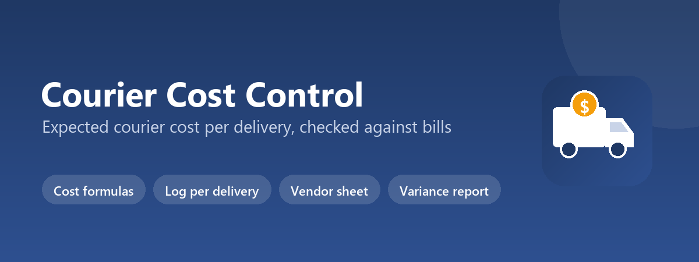

Work out the expected courier cost of every delivery and check it against what the courier bills.
Build a cost formula for each delivery method from weight, volume, packages and your fixed rates. Every validated delivery gets a cost log with the expected cost and its share of what the customer paid for shipping. Send the sheet to your courier, import their actual charges and see the difference.
🔢 Cost formulasCombine fixed rates and delivery values with + - * /, min, max, round, ceil, floor and iif, checked before they are used. |
📦 Log per deliveryThe expected cost, the values used and the customer charge are recorded when the delivery is validated. |
💰 Preview on ordersThe sales order shows the expected courier cost of the chosen delivery method to your courier cost team. |
📄 Vendor sheetExport an Excel sheet for your courier, let them fill in the actual cost and import it back. |
📊 Variance reportCompare expected and actual cost and see the margin per delivery, by carrier and by month. |
🔒 Locked once billedActual costs are locked when imported or confirmed, and only a manager can unlock them. |
Odoo 18.0 • Community & Enterprise • depends on Sales, Inventory and Delivery • Licence LGPL-3
Odoo implementation and development. thecodelegion.com